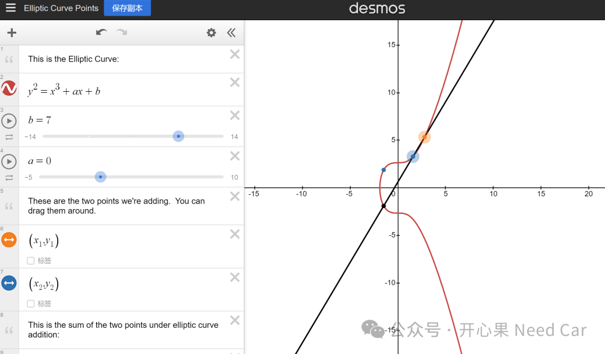
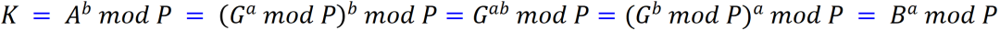
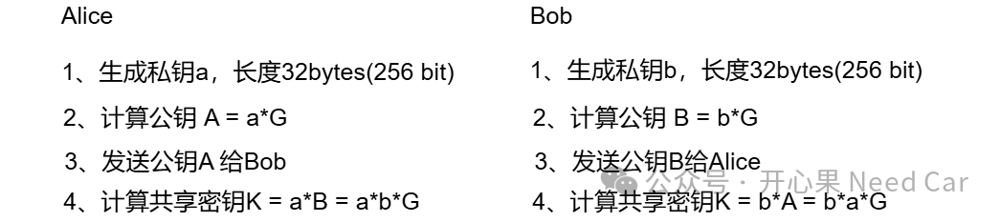

开心果 Need Car · 2025-01-22T06:36:00+08:00 · 微信原文
ECC密钥协商算法：ECDH（Elliptic Curve Diffie–Hellman，椭圆曲线迪菲-赫尔曼密钥交换算法）、X25519（曲线Curve25519的x坐标的椭圆曲线Diffie (ECDH)协议）。
提示：ECDH是通用的椭圆曲线密钥交换框架，可以使用多种不同的椭圆曲线，通常需要点的完整坐标(x,y)。X25519是特定曲线（Curve25519）的密钥交换方式，只使用x坐标。
1、椭圆曲线
应用ECC实现密码学方案时，首先需要选择合适的曲线。椭圆曲线有多种，
“任意椭圆曲线都可以转换成维尔斯特拉斯曲线（Weierstrass Curve）。椭圆曲线还包括多种其他的类型，eg：蒙哥马利曲线（Montgomery Curve）、扭曲爱德华线（Twisted Edwards Curve）等。Curve25519就是在蒙哥马利曲线上定义的椭圆曲线，而Ed25519是在扭曲爱德华曲线上定义的椭圆曲线。”(1)
（一）Weierstrass Curve
针对密码学简化的椭圆曲线，Weierstrass Curve简化形式如下：
其中，
Fp（或者GF(p)）表示椭圆曲线坐标所属的有限域（Finite Field），其中p是一个质数。有限域特指包含有限个元素的域，eg：F(2)包含二个元素（0, 1,）F(3) 包含三个元素（0, 1, 2）。
如果令E(Fp)表示椭圆曲线上的点的集合，则在E(Fp)可以定义零点、基点、加法运算、减法运算等。如此，可以使得椭圆曲线上的点集合构成一个群。
在椭圆曲线中，通常会引入一个额外的点，称为“点在无穷远”或“零点”。这个点不是曲线上的常规点，而是一种虚拟的、概念上的点。零点被视为加法运算的身份元素，这意味着对于任何曲线上的点P，都满足：P+O=P， 其中O是零点。
选择特定的ECC曲线以后，则基点G（base point）确定，G乘以一个确定的整数k（private key，私钥）即可得到公钥P（public key），即：P =k*G。
ECC是基于有限域上的椭圆曲线，公式表达如下：
针对基于有限域的椭圆曲线，有如下规则：
存在一组整数坐标{x, y}，且0 <= x < p
整数坐标{x, y}点在如上椭圆曲线上
对于secp256k1，建议参数：a = 0， b=7。公式转换如下：

图形生成链接地址：https://www.desmos.com/calculator/ialhd71we3
（二）Montgomery Curve
其中，a,b是常数，为有限域内的值，并且满足：
（三）Twisted Edwards Curve
其中，a,d ≠ 0，a≠b。
Montgomery Curve和Twisted Edwards Curve都可以转换为等价的Weierstrass Curve。
2、ECC密钥
ECC属于非对称算法，所以，它需要一对配对的密钥，即：公钥和私钥。
私钥（private key）：一个固定长度的随机整数，eg：256bit长度的整数
公钥（public key）：公钥是选定曲线上的整数坐标点{x, y}
ECC的公钥和私钥长度取决于所选择的椭圆曲线。NIST（National Institute of Standards and Technology，美国国家标准与技术研究院）推荐的常用曲线：secp256r1（也称P-256）、secp384r1（P-384）等。公钥和私钥的长度如下：
secp256r1 (P-256): 私钥通常是256位（32字节），公钥通常是512位（64字节，包括x和y坐标各256位）。
secp384r1 (P-384): 私钥通常是384位（48字节），公钥通常是768位（96字节，包括x和y坐标各384位）。
公钥的长度通常是私钥长度的两倍，因为公钥由椭圆曲线上的一点（x坐标和y坐标）组成，而私钥是一个标量。在实际应用中，公钥和私钥的长度可能会有所不同，具体取决于实现方式和编码格式。
3、Curve25519与Ed25519
（一）Curve25519
Curve25519是一条Montgomery形式的椭圆曲线，按照(2)规范，p = 2^255 - 19，a = 486662，b = 1，具体公式如下：
如上公式中，素数p选择2^255 - 19是为了确保安全性。
基点（base point），有时也称generator point，Curve25519对应的基点参数如下：
（9,14781619447589544791020593568409986887264606134616475288964881837755586237401）。
对应的阶（order）为：
2^252 + 0x14def9dea2f79cd65812631a5cf5d3ed
注意，不要混淆Curve25519和X25519。Curve25519 是一种椭圆曲线，包含x和y坐标。X25519是基于Curve25519的密钥交换协议的具体实现，只使用x坐标进行计算，输入和输出都是32 bytes，X25519专注于ECDH密钥交换。
ECDH密钥交换算法有非对称算法DH（Diffie-Hellman）发展而来，而DH算法的核心当属离散对数。数学的范畴内，对数运算的取值可以连续取值，而单片机的工程应用中，往往需要将连续计算的数学公式转换成非连续（离散）的。所以，DH的处理中，运用了离散对数（Discrete Logarithm）问题，即：在对数运算的基础上添加模运算（用mod表示，数学运算符%）。
离散对数概念(4)：
如果一个整数b和质数p的一个原根a，可以找到一个唯一的指数i，使得：
那么，指数i称为b的以a为底数的模p的离散对数。
底数a和模数p是可公开的，b是真数，i是对数。知道i，可以很容易算b，而知道b，几乎无法算出i，这就是DH算法的"灵魂"。
1、DH算法原理
DH算法使得通信双方在不安全的通信信道（insecure channel）上安全地交换密钥。假设通信双方：Alice和Bob（RFC7748示例），两者使用DH算法交换密钥。
第一，Alice和Bob需要明确模数（P）和底数（G）
第二，Alice生成一个随机私钥k_a，计算Alice的公钥A = G^k_a，Bob生成一个随机私钥k_b，计算Bob的公钥B = G^k_b
第三，Alice将生成的公钥A发送给Bob，同时，Bob将生成的公钥B发送给Alice
第四，Alice此时一共有5个参数：P、G、a、A、B，Bob此时一共有5个参数：P、G、b、A、B
第五，Alice计算共享密钥K = B^a（ mod P），Bob计算共享密钥K = A^b ( mod P)。
提示，离散对数的幂运算符合交换律，所以：

之后，Alice和Bob即可使用计算出来的共享密钥K进行安全通信。
具体示例：假设P = 23，G = 5。
（1）Alice 选择私钥 a = 4，计算公钥A = 5^4(mod 23) = 625 mod 23 = 4
（2）Bob 选择私钥 b = 5，计算公钥B = 5^5(mod 23) = 3125 mod 23 = 20
（3）Alice 和 Bob 交换公钥
（4）Alice 计算共享密钥 K = 20^4 (mod 23) = 160000 mod 23 = 12
（5）Bob 计算共享密钥 K = 4^5 (mod 23) = 1024 mod 23 = 12
因此，Alice 和 Bob 的共享密钥是12。
2、x25519的密钥交换原理
Alice和Bob密钥协商过程如下所示：

由于G点是一个坐标{x, y}，所以K = {a*b*x, a*b*y}，由于x25519使用x坐标作为共享密钥，所以，两者协商的密钥为a*b*x。
（二）Ed25519
参考（3），Ed25519是Twisted Edwards Curve的一个实例。Ed25519是Twisted Edwards Curve的具体应用，主要是为了实现高效的数字签名方案。
其中，素数p = 2^255 - 19，a = -1，d = 121666^-1 mod p，基点为：
（0x216936D3CD6E53FEC0A4E231FDD6DC5C692CC7609525A7B2C9562D608F25D51A,0x6666666666666666666666666666666666666666666666666666666666666658）
阶（order）为:
2^252+27742317777372353535851937790883648493。对应的十六进制表示形式如下：
/* 小端模式 */static const uint32 SMULTed25519_n[ECC_LENGTH_U32] ={0x5CF5D3ED,0x5812631A,0xA2F79CD6,0x14DEF9DE,0x00000000,0x00000000,0x00000000,0x10000000};
Curve25519和Ed25519存在双向有理等价映射。只要实现了其中一种类型的曲线，就可以利用双向有理等价得到另一种类型的曲线实现。
对于ED25519，对应公钥，仅使用了Y轴的数据，所以，公钥长度为32 bytes。
补充提示：
ed25519的签名/验证在线网址：https://cyphr.me/ed25519_applet/ed.html
ed25519参数格式的在线转换网址：https://qr9.net/string-encoding
使用到的SHA512在线计算网址：https://www.strerr.com/cn/sha512.html
小结：Curve25519、Ed25519是椭圆曲线，X25519是Curve25519的具体应用。X25519侧重密钥交换，Ed25519侧重高效签名。
参考资料
（1）https://www.zhihu.com/question/290541183
（2）https://www.rfc-editor.org/rfc/rfc7748.html
（3）https://www.rfc-editor.org/rfc/pdfrfc/rfc8032.txt.pdf
（4）https://zhuanlan.zhihu.com/p/346489295?s_r=0
往期精彩回顾